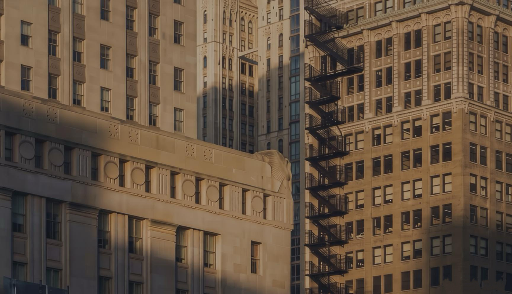

5年测试 + 产品 + 数据经验 · 4 个端到端独立交付作品。将个人主导的「AI 智能测试平台」（FastAPI + LangGraph + RAG）在组内推动落地为测试提效工具，独立设计并执行功能、兼容性、性能测试用例，问题闭环率 95% 以上。统筹多项目并行测试计划，编写与维护测试计划 / 用例 / 报告 100+ 份。基于数据与用户反馈开展产品分析，复现排查客户问题，多次提出产品体验优化建议并被采纳，数据来自真实记录与累计经验非估算。
2021 · 工程造价
西南科技大学本科毕业
2021 — 2025 · 产品经理 + 测试
需求拆解 · 指标设计 · 数据验证
2025 — 2026 · 测试工程师
质量保障 · 自动化用例集
2026 · 了解AI
Now / 2026 — 至今
AI 产品经理转型中
系统补 RAG、Agent 工作流、Vibe Coding与产品基本能力，整理出四个可讲清取舍的作品，同时重建产品思维能力。
未来
深耕AI · 产品项目
关于我 ↗
→next